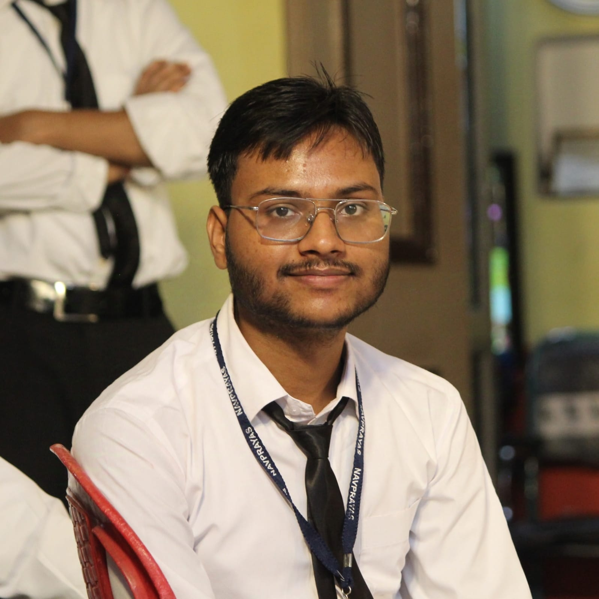

I am a hardworking and dedicated individual of third year studying in a third tier college.
Developed a classic Simon Game that challenges players to remember and reproduce sequences of colors and sounds.
Each button press is accompanied by corresponding colors and sounds to enhance the user experience.
Tech Stack - HTML, CSS, JavaScript
Designed and developed an intuitive QR Code Generator allowing users to generate QR codes dynamically based on input tex t or URLs.
Integrated a third-party QR Code API to generate high-quality, scannable QR codes in real-time.
Implemented a responsive UI with HTML and CSS, and used JavaScript for input validation and dynamic QR code renderi ng without page reloads.
Tech Stack - HTML, CSS, JavaScript, QR Code API
- Gained the knowledge of how to work on posters using Adobe Illustrator and Canva for common events.
- Served as the main anchor for Pratibha Milan 2023, hosting the felicitation ceremony attended by 300+ students, parents and guests.
- Led a team of 10+ members to organize a Spellbee competition, overseeing documentation, manpower allocation, event planning, and logistical coordination.